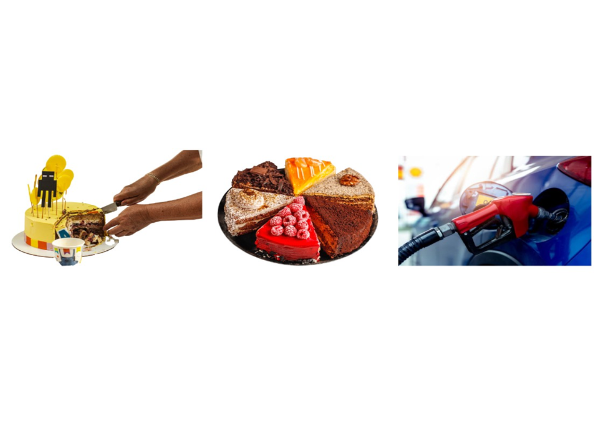
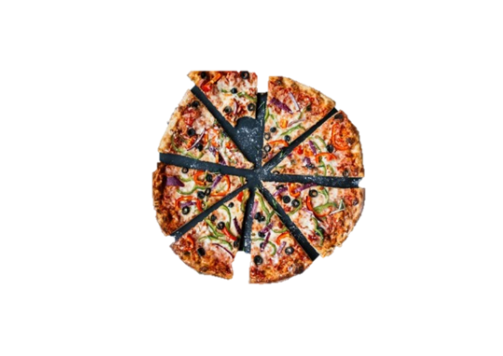
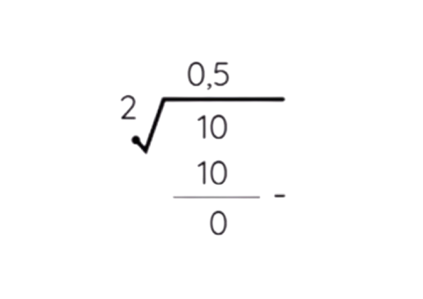
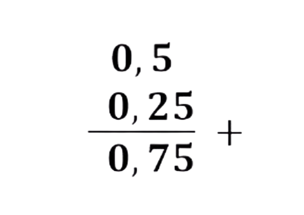
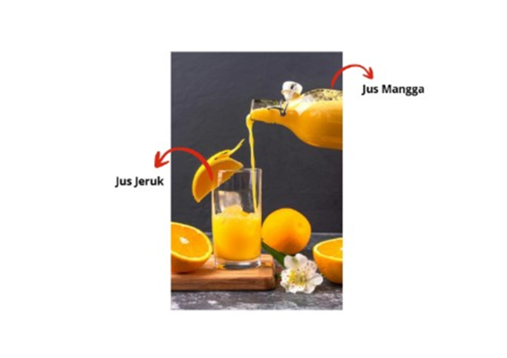
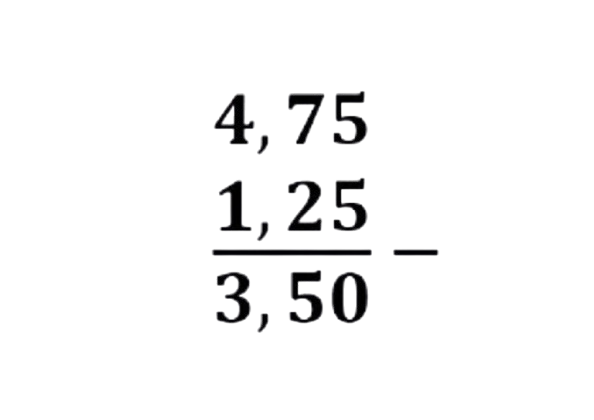
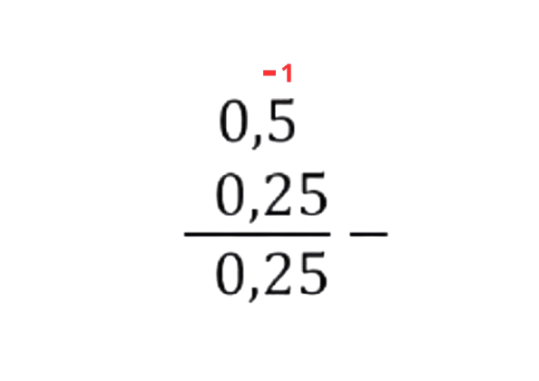

BILANGAN – Penjumlahan Pecahan dan Bilangan Desimal
Tujuan Pembelajaran
Peserta didik dapat menentukan hasil penjumlahan pecahan serta bilangan desimal dalam konteks masalah nyata. (C3)

A. Materi Inti
1. Mengenal Pecahan
Setiap kali kita membagi sesuatu menjadi beberapa bagian yang sama besar, setiap potong bagian disebut pecahan.
Misalnya satu pizza dibagi menjadi 8 potong sama besar. Jika kamu mengambil satu potong, berarti kamu mengambil 18 bagian dari pizza tersebut.

Jadi, pecahan digunakan untuk menyatakan bagian dari keseluruhan.
Bagian Pecahan
Pembilang → angka di atas garis pecahan, menunjukkan banyak bagian yang diambil.
Penyebut → angka di bawah garis, menunjukkan jumlah seluruh bagian sama besar.
Contoh: 35 dibaca "tiga per lima", artinya dari 5 bagian sama besar, diambil 3 bagian.
Contoh dalam Kehidupan Sehari-hari
Segelas jus diminum 12 bagian, berarti setengahnya sudah habis.
Tangki air diisi 34 bagian, berarti hampir penuh.
Satu kotak kue dibagi untuk 4 orang, setiap orang mendapat 14 kotak.
2. Mengenal Bilangan Desimal
Kadang kita tidak menulis pecahan dengan bentuk garis per, tetapi menggunakan tanda koma ( , ). Bentuk ini disebut bilangan desimal.
Bilangan desimal merupakan cara lain menuliskan pecahan dengan penyebut 10, 100, 1000, dan seterusnya.
Perbandingan Pecahan dan Desimal:
Pecahan
Desimal
Dibaca
Contoh Kasus
12 = 510
0,5
nol koma lima
Setengah liter air
14 = 25100
0,25
nol koma dua lima
Seperempat kilogram gula
34 = 75100
0,75
nol koma tujuh lima
Tiga perempat meter kain
Bilangan desimal sering muncul di timbangan, ukuran panjang, uang, dan takaran bahan masakan.
3. Menjumlahkan Pecahan
a. Pecahan Berpenyebut Sama
Jika penyebutnya sama, cukup tambahkan pembilangnya.
Contoh:28 + 38 = 58
Karena sama-sama dibagi menjadi 8 bagian, tinggal tambahkan bagian yang
diambil. .
b. Pecahan Berpenyebut Berbeda
Jika penyebutnya berbeda, perlu menyamakan penyebut terlebih dahulu.
Tentukan penyebut yang sama (gunakan KPK dari penyebut).
Ubah kedua pecahan menjadi pecahan senilai dengan penyebut yang sama.
Jumlahkan pembilang.
Sederhanakan hasil jika masih bisa dibagi.
Contoh langkah penjumlahan:
Soal:13 + 16
Tentukan penyebut sama: 6
Ubah 13 ke penyebut 6: 13 = 26
Penjumlahan: 26 + 16 = 36
Sederhanakan hasil: 36 = 12
Jadi, hasil penjumlahan 13 + 16 = 12 (bentuk paling sederhana)
4. Menjumlahkan Bilangan Desimal
Tulis bilangan sejajar berdasarkan posisi koma.
Tambahkan seperti penjumlahan biasa.
Letakkan koma pada posisi yang sama di hasil.
Contoh: 2,35 + 1,6 =
Cara 1: Penjumlahan Bersusun
Selalu sejajarkan koma agar hasilnya tepat!
Cara 2: Dijajarkan dalam Baris
Tambahkan langsung seperti biasa, sambil mengingat posisi koma. 2,35 + 1,6 = 3,95
Penjelasan Sederhana:
Bilangan 2 dan 1 adalah bilangan bulat → 2 + 1 = 3
Bilangan 0,35 dan 0,60 adalah bagian desimal → 0,35 + 0,60 = 0,95
Jika digabungkan, hasilnya 3,95
Cara 3: Ubah ke Pecahan Biasa
2,35 = 235100
1,6 = 1610 = 160100
Jumlahkan: 235100 + 160100 = 395100 = 3,95
Kalian boleh menggunakan cara mana saja, yang penting langkahnya benar!
5. Menjumlahkan Pecahan dan Bilangan Desimal
Langkah-langkah:
Tentukan bentuk yang ingin disamakan (pecahan → desimal).
Lakukan penjumlahan seperti biasa.
Sederhanakan hasil jika perlu.
Contoh Soal: Pecahan + Desimal
12 + 0,25 =
Ubah pecahan ke Desimal cara 1
12 × 55 = 510 = 0,5
Cara pecahan ke Desimal cara 2

Karena 1 tidak bisa dibagi 2, maka 1 ditambah 0 menjadi 10 kemudian di atas ditulis 0, (nol koma)
Jadi: 12 = 0,5
Maka :

Jadi, hasilnya adalah 0,75
6. Menjumlahkan Bilangan Desimal dan Pecahan
Langkah-langkah:
Tentukan bentuk yang ingin disamakan (desimal → pecahan).
Lakukan penjumlahan seperti biasa.
Sederhanakan hasil jika perlu.
Langkah-langkah mengubah desimal ke pecahan:
Lihat angka di belakang koma (menentukan penyebut):
1 angka di belakang koma → penyebutnya 10
2 angka di belakang koma → penyebutnya 100
3 angka di belakang koma → penyebutnya 1000
Tulis bilangan tanpa koma sebagai pembilang, lalu sederhanakan.
Contoh konversi desimal ke pecahan:
0,5 = 510 = 12
0,25 = 25100 = 14
0,125 = 1251000 = 18
Contoh 1:
0,5 + 14 =
Ubah desimal ke pecahan terlebih dahulu:
0,5 = 510 = 12
Maka:
12 + 14 = 24 + 14 = 34
Contoh 2:
0,40 + 310 =
Ubah desimal ke pecahan terlebih dahulu:
0,40 = 40100 = 25
Maka:
25 + 310 = 410 + 310 = 710
Contoh 3:
0,375 + 18 =
Ubah desimal ke pecahan:
0,375 = 3751000 = 38
Maka:
38 + 18 = 48 = 12
BILANGAN – Pengurangan Pecahan dan Bilangan Desimal
Tujuan Pembelajaran
Peserta didik dapat menentukan hasil pengurangan pecahan serta bilangan desimal dalam konteks masalah nyata. (C3)
Pertanyaan Pemantik:

Gelas A berisi 34 liter jus mangga.
Gelas B berisi 0,5 liter jus jeruk.
Setelah dicampur, 0,25 liter jus tumpah.
"Kalau sebagian jus tumpah, bagaimana cara menghitung sisa jusnya?"
Konsep Awal:
Pengurangan digunakan saat ada sesuatu yang berkurang, terpakai, atau tersisa.
1. Eksplorasi Konsep: Pengurangan Pecahan
Pecahan menunjukkan bagian dari keseluruhan, jadi saat dikurangi, kita menghitung bagian yang tersisa.
Langkah-langkah Mengurangkan Pecahan:
Jika penyebutnya sama, kurangi pembilangnya.
Jika penyebutnya berbeda, samakan penyebut terlebih dahulu.
Sederhanakan hasil jika bisa.
Contoh 1 (Penyebut Sama):
78 – 38 = 48 = 12
Karena penyebutnya sama (8), kita cukup mengurangkan pembilangnya saja.
Jika kamu punya 78 kue dan memakan 38, maka sisa kuemu 12 bagian.
Contoh 2 (Penyebut Berbeda):
56 – 13 = 56 – 26 = 36 = 12
Karena penyebutnya berbeda (6 dan 3), kita samakan dulu penyebutnya.
Bayangkan kamu memiliki 56 liter jus, lalu diminum 13 liter. Sisa jusnya 12 liter.
Tips Cepat: Gunakan KPK dari kedua penyebut untuk menyamakan penyebut.
2. Pengurangan Bilangan Desimal
Cara 1: Bersusun Sejajar
Langkah:
Sejajarkan koma dari kedua bilangan.
Kurangkan seperti pengurangan biasa.
Letakkan koma di posisi yang sama pada hasil.
Contoh:
4,75 – 1,25 =

Ingat, posisi koma harus sejajar agar nilainya tidak berubah.
Cara 2: Dijajarkan dalam Baris
Langkah: Kurangkan langsung dengan mengingat posisi koma.
Contoh:
5,5 – 2,3 = 3,2
Penjelasan Sederhana:
Bilangan 5 dan 2 adalah bilangan bulat → 5 - 2 = 3
Bilangan 0,5 dan 0,3 adalah bagian desimal → 0,5 - 0,3 = 0,2
Jika digabungkan, hasilnya 3,2
Perhatikan nilai tempat (satuan, persepuluh, perseratus).
Cara 3: Ubah ke Pecahan Biasa
Contoh:
0,75 – 0,25 =
Langkah:
Ubah ke pecahan:
0,75 = 75100 = 34 (sama-sama dibagi 25)
0,25 = 25100 = 14 (sama-sama dibagi 25)
Kurangkan pecahannya:
34 – 14 = 24 = 12
Jika mau, ubah lagi ke desimal: 12 = 510 = 0,5
Cara ini menunjukkan hubungan antara desimal dan pecahan.
3. Mengurangkan Pecahan dan Bilangan Desimal
Langkah-langkah:
Tentukan bentuk yang ingin disamakan (pecahan → desimal).
Lakukan pengurangan seperti biasa.
Sederhanakan hasil jika perlu.
Contoh 1: Pecahan – Desimal
12 – 0,25 =
Ubah pecahan ke Desimal cara 1:
12 × 55 = 510 = 0,5
Ubah pecahan ke Desimal cara 2:
Karena 1 tidak bisa dibagi 2, maka 1 ditambah 0 menjadi 10 kemudian di atas ditulis 0, (nol koma)
Jadi: 12 = 0,5
Maka pengurangan:

Jadi, hasilnya adalah 0,25
4. Mengurangkan Bilangan Desimal dan Pecahan
Langkah-langkah:
Tentukan bentuk yang ingin disamakan (desimal → pecahan).
Lakukan pengurangan seperti biasa.
Sederhanakan hasil jika perlu.
Langkah-langkah mengubah desimal ke pecahan:
Lihat angka di belakang koma (menentukan penyebut):
1 angka di belakang koma → penyebutnya 10
2 angka di belakang koma → penyebutnya 100
3 angka di belakang koma → penyebutnya 1000
Tulis bilangan tanpa koma sebagai pembilang, lalu sederhanakan.
Contoh konversi desimal ke pecahan:
0,5 = 510 = 12
0,25 = 25100 = 14
0,125 = 1251000 = 18
Contoh 1:
0,5 – 14 =
Ubah desimal ke pecahan terlebih dahulu:
0,5 = 510 = 12
Maka:
12 – 14 = 24 – 14 = 14
Contoh 2:
0,40 – 310 =
Ubah desimal ke pecahan terlebih dahulu:
0,40 = 40100 = 25
Maka:
25 – 310 = 410 – 310 = 110
Contoh 3:
0,375 – 18 =
Ubah desimal ke pecahan:
0,375 = 3751000 = 38
Maka:
38 – 18 = 28 = 14
Tujuan Pembelajaran
Peserta didik dapat memecahkan masalah penjumlahan dan pengurangan pecahan serta bilangan desimal dalam bentuk soal cerita. (C4)
Pertanyaan Pemantik
Kalau sebagian kue sudah dimakan, bagaimana menghitung sisa kue?
Jika bahan ditambah lalu sebagian digunakan, operasi apa yang harus dilakukan?
Dalam soal, kapan kita menjumlahkan dulu, kapan mengurangkan?
A. Strategi Pemecahan Masalah
Pahami situasi masalah.
Tentukan data yang diketahui dan yang ditanyakan.
Tentukan operasi yang sesuai (tambah atau kurang).
Pilih strategi: Bagaimana cara menghitungnya? (samakan penyebut, sejajarkan desimal)
Periksa kembali hasilnya.
B. Contoh Soal Cerita Pecahan dan Bilangan Desimal
1. Nina membuat jus dengan 12 liter jus apel dan 14 liter jus jeruk. Setelah dicampur, ia menuangkan 13 liter jus ke gelas teman. Berapa liter jus yang tersisa?
Penyelesaian:
Langkah 1: Ubah semua ke pecahan sepenyebut
12 = 612
14 = 312
13 = 412
Langkah 2: Tambah jus apel dan jeruk
612 + 312 = 912 = 34
Langkah 3: Kurangi yang dituangkan
34 – 412 = 912 – 412 = 512
Jawaban:512 liter
Jadi, jus yang tersisa sebanyak 512 liter.
2. Belanja Bahan Masakan
Andi membeli 23 kg gula dan 13 kg tepung. Setelah digunakan, tersisa 14 kg gula dan 16 kg tepung. Berapa total bahan yang tersisa?
Penyelesaian:
Sisa gula:23 – 14 = 812 – 312 = 512 kg
Sisa tepung:13 – 16 = 26 – 16 = 16 kg
Total sisa:512 + 16 = 512 + 212 = 712 kg
Jadi, total bahan yang tersisa 712 kg.
3. Ibu membeli 2,5 kg tepung dan menambah 1,5 kg lagi. Kemudian digunakan 1,75 kg untuk membuat kue. Berapa kg tepung yang tersisa?
Penyelesaian:
4,0 (Jumlah tepung awal)
Jadi, sisa tepung 2,25 kg.
4. Siswa mengumpulkan 0,7 karung botol pada hari pertama dan 0,5 karung pada hari kedua. Setelah diperiksa, 0,3 karung rusak. Berapa karung botol yang masih bisa digunakan?
Penyelesaian:
Jumlah awal: 0,7 + 0,5 = 1,2 karung
Kurangi rusak: 1,2 - 0,3 = 0,9 karung
Jadi, ada 0,9 karung botol yang bisa digunakan.
Petunjuk Pengerjaan
Bacalah setiap soal dengan cermat.
Gunakan cara yang menurutmu paling mudah dipahami.
Tulis langkah-langkah perhitunganmu dengan rapi.
Jawablah dengan satuan yang tepat.
Informasi Kelompok
LKPD 1 - Penjumlahan Pecahan dan Bilangan Desimal
1. 520 + 1520 =
2. 1825 + 650 =
3. Perhatikan gambar timbangan pisang!
Hitung berat total pisang tersebut!
4. 34 + 0,25 =
5. 0,80 + 25 =
LKPD 2 - Pengurangan Pecahan dan Bilangan Desimal
1. 912 – 412 =
2. 78 – 14 =
3. 2,65 – 1,4 =
4. 0,75 – 14 =
5. 34 – 0,2 =
LKPD 3 - Soal Cerita Penjumlahan & Pengurangan
1. Dito bersepeda 0,5 km ke taman, lalu berkeliling 14 km. Ia kembali ke rumah melalui jalan lain sejauh 4 km. Berapa total jarak yang sudah ditempuh?
2. Kolam diisi air 34 m³, ditambah 0,5 m³ dari selang tambahan. Jadi berapa jumlah air yang ada dikolam?
3. Gudang memiliki 0,7 L cat merah dan 0,6 L cat biru. Jika digunakan 910 L untuk proyek mural, berapa liter cat yang tersisa?
4. Sebuah tim menyelesaikan 23 proyek pada minggu pertama dan 0,25 proyek pada minggu kedua. Setelah evaluasi, ternyata harus diulang 15 proyek. Berapa proyek yang sudah benar-benar selesai?
5. Kelompok mengumpulkan 34 kg bahan kimia dan menambah 0,6 kg lagi. Jika digunakan 0,4 kg untuk eksperimen, berapa kg bahan kimia yang tersisa?